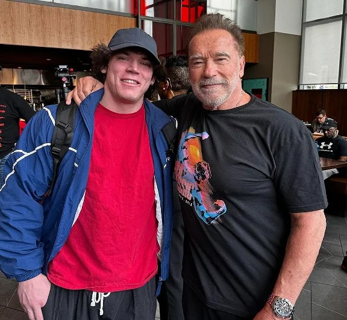

Sam Sulek
uznávaný trenér
nutriční poradce
známý influencer
Sam Sulek je známý fitness trenér, který se stal populárním díky svému charismatickému přístupu, odborným znalostem a schopnosti motivovat klienty. Jeho tréninkový styl je intenzivní a zaměřený na výsledky, což z něj činí vyhledávaného trenéra mezi lidmi, kteří se snaží dosáhnout svých fitness cílů.
Profesionalita a odborné znalosti: Sam Sulek má hluboké znalosti v oblasti anatomie, fyziologie a výživy. Tyto znalosti aplikuje při sestavování individuálních tréninkových plánů, které jsou přizpůsobeny specifickým potřebám a cílům každého klienta.
Individuální přístup: Každý klient je pro Sama jedinečný. Věnuje čas tomu, aby pochopil jejich cíle, zdravotní stav a fyzické schopnosti, což mu umožňuje vytvářet efektivní a bezpečné tréninkové programy.
Další obrázky: